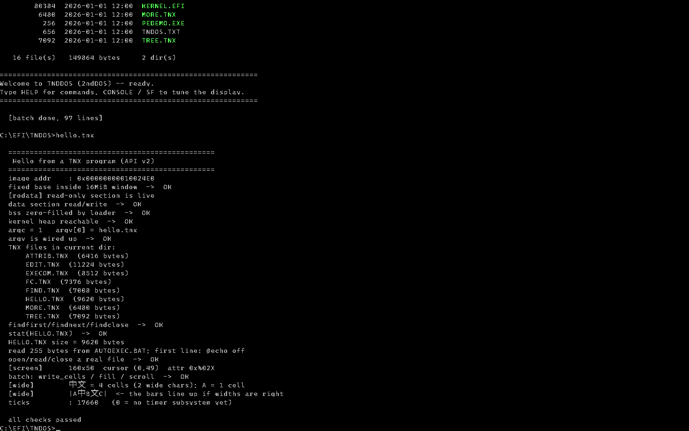

自有的 framebuffer 后端，160x50 网格。倒数几行的 [wide] 是中文对齐自检 ——
|A中B文C| 三条竖线要对得上，错了就是半角 / 全角的格子宽度算错了。
Our own framebuffer backend on a 160x50 grid. The [wide] lines near the bottom are the
CJK alignment self-test: the three bars in |A中B文C| have to line up, otherwise the half-width and
full-width cell maths is wrong.
为什么做这个Why
DOS 的交互模型没过时DOS's interaction model is not obsolete
命令行、直接、不藏东西。你需要什么就打什么，出错就说清楚错在哪。 这套东西在 1981 年好用，现在也好用 —— 过时的是它的内存模型，不是它的用法。 A command line, direct, hiding nothing. You type what you need and it tells you plainly when something fails. It worked in 1981 and it works now. What aged badly was the memory model, not the way you use it.
UEFI 给了我们一个不用碰 BIOS 的起点UEFI gives us a starting point that avoids BIOS entirely
写一个操作系统最难的不是内核，是到内核为止的那段路：实模式、A20、GDT、自己写磁盘和键盘驱动。 UEFI 把这一段替我们做了 —— 文件系统、磁盘、键盘、显示，开局就能用。 我们不着急切断它，而是先把每一块慢慢接过来。 The hard part of an OS is not the kernel, it is the road leading to it: real mode, A20, the GDT, hand-written disk and keyboard drivers. UEFI does that part for us -- filesystem, disk, keyboard and display work from the first instruction. We are in no hurry to cut it off; instead we take each piece over, one at a time.
反目标：不做成 PE 的复刻Anti-goal: not a PE look-alike
这不是一个"要替代 Windows"的项目，也不是"重造一个 PE 加载器"的项目。
自制可执行格式 TNX 存在的理由很硬：
当我们不能再调固件的 LoadImage 的时候，我们还能加载程序。
This is not a project to replace Windows, nor to rebuild a PE loader. Our executable format,
TNX, exists for one hard reason:
when we can no longer call the firmware's LoadImage, we can still load a program.
做了什么What
引导链Boot chain
BOOTX64.EFI → kernel.efi → Shell → autoexec.bat。efidos.sys / config.sys 提供设置项与环境变量。
BOOTX64.EFI to kernel.efi to the shell to autoexec.bat, with efidos.sys / config.sys for settings and environment variables.
TNX 可执行格式The TNX executable format
固定基址、无重定位、无导入表。加载器是「一次 memcpy 加一个跳转」。 规范已到 v1.1，带架构标识。 Fixed base address, no relocations, no imports. The loader is one memcpy and a jump. The specification is at v1.1 and carries an architecture id.
控制台是自己的The console is ours
控制台服务层加可换后端：固件 ConOut 一个，自己往帧缓冲写像素的一个。
CONSOLE fb / CONSOLE uefi 随时切。
A console service layer with swappable backends: the firmware's ConOut, and one that writes
its own pixels into the framebuffer. Switch any time with CONSOLE fb / CONSOLE uefi.
中文能上屏Chinese on screen
自己光栅化、自己加载、自己渲染。21,427 个字形，8x16 半角 / 16x16 全角， 统一格子高度 16。字体生成器也在仓库里。 Rasterised, loaded and rendered by us. 21,427 glyphs, 8x16 half-width and 16x16 full-width on one uniform cell height of 16. The font generator ships with the repository.
API v2.4API v2.4
文件、目录、颜色、光标，以及批量原语（write_cells / fill /
scroll / screen）。最后那组是性能底线，不是高级功能。
Files, directories, colours, cursor, plus batch primitives (write_cells,
fill, scroll, screen). That last group is a performance floor,
not a luxury feature.
定时器A timer
ticks() 返回自启动以来的毫秒。读 TSC，用固件的 Stall 校频。
不需要 IDT —— 读时基不是等中断。可在配置文件里关掉。
ticks() returns milliseconds since boot, reading the TSC and calibrating against
the firmware's Stall. No IDT required -- reading a time base is not waiting for an
interrupt. It can be switched off in the configuration files.
诚实的现状An honest status
这些不是免责声明，是"会让你白折腾"的东西。 These are not disclaimers; they are the things that will waste your time.
- 一次一个程序，ring 0，没有内存隔离。程序崩了系统就崩。这不是 bug，是当前状态。 One program at a time, ring 0, no memory isolation. A crashing program takes the system down. This is not a bug, it is the current state.
- 还没有
ExitBootServices。固件的中断和异常处理还在 —— 所以我们崩了还能看到寄存器转储。 NoExitBootServicesyet. The firmware's interrupt and exception handling is still in place, which is why a crash still gives us a register dump. - 中文只能显示，不能输入。光标也还不闪。 Chinese can be displayed but not typed. The cursor does not blink yet either.
- 只在 QEMU + OVMF 上验证过。不支持 EFI 的机器启动不了，也没有 CSM 这条路。 Only ever verified on QEMU + OVMF. Machines without EFI cannot boot it, and there is no CSM route.
autoexec.bat每次开机都在真实 ESP 上写。上真机前请把那几行注释掉。autoexec.batwrites to the real ESP on every boot. Comment those lines out before using real hardware.
从这里开始Start here
去 下载页拿源码和工具。 想动手改的，先读 CONTRIBUTING.md 和 路线图。 Head to the download page for source and tools. If you want to change something, read CONTRIBUTING.md and the roadmap first.